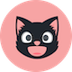

Agnes
Feline Nutrition Specialist
Agnes brings a wealth of expertise in feline dietary health, helping cat owners make informed decisions about their pets' nutrition. From crafting guides on balanced diets to highlighting the best treats, she ensures every feline fan has the tools to keep their cats healthy and happy.

Damon
Director of Feline Enrichment
Damon leads the way in creating engaging and enriching content for both cats and their humans. He spearheads interactive features like quizzes, product reviews, and playtime tips, ensuring our audience can build meaningful connections with their furry friends.

Herbert
Chief Wellness Officer
Herbert oversees all things related to feline health and well-being. From behavior guides to wellness tips, his focus is on empowering cat parents with resources to provide the best care for their companions.
Mike
Vice President of Cat Content
Mike is the driving force behind Purrfect Vibes' engaging blog posts, memes, and educational articles. His creative direction ensures our platform strikes the perfect balance of entertainment and information, keeping our audience coming back for more.

Ferris
Founder and CEO
Ferris founded Purrfect Vibes with a vision to bring together a community of cat lovers. As a lifelong feline enthusiast, Ferris is dedicated to providing a platform that educates, entertains, and inspires. Under Ferris's leadership, Purrfect Vibes continues to grow as the ultimate destination for all things cat-related.